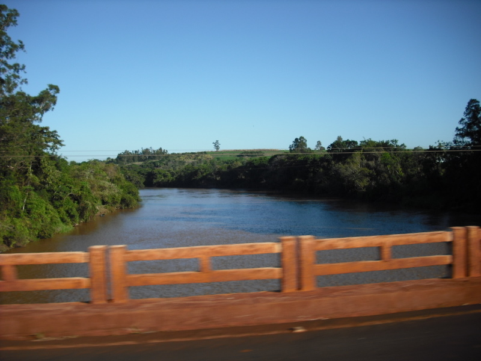

Muere una adolescente arrastrada por la corriente en Paraná; hallan vivos a dos jóvenes
El suceso ocurrió durante una tormenta en Rolândia el 7 de noviembre; la búsqueda terminó el 8 de noviembre cuando los jóvenes regresaron a casa.

Qué pasó
Una adolescente murió tras ser arrastrada por la corriente de un arroyo durante una tormenta en la zona de Jardim Monte Carlo, en Rolândia, estado brasileño de Paraná, el sábado 7 de noviembre de 2026. Según Tarobá, que cita un registro de la Policía Militar, un grupo de ocho jóvenes estaba cerca del agua cuando ocurrió el accidente. Los rescatistas encontraron sin vida a la joven, identificada como Kauane en parte de la cobertura. Dos muchachos de 17 y 18 años fueron declarados desaparecidos inicialmente. El domingo 8 de noviembre se confirmó que ambos habían conseguido salir del agua y regresar a sus casas por sus propios medios, por lo que terminó la búsqueda. Las primeras informaciones ofrecieron edades contradictorias para la víctima: algunas indicaron 14 años, mientras que Tarobá, citando el registro policial, señaló 12. Las circunstancias precisas de la muerte siguen bajo investigación.
Análisis del Cuervo
El caso demuestra cómo el nivel de ríos y arroyos puede aumentar rápidamente durante las tormentas, incluso cerca de sus orillas. Las primeras noticias hablaban de dos desaparecidos, pero la información quedó superada cuando se confirmó que ambos estaban vivos en sus casas. Es importante actualizar estos datos para evitar la circulación de alertas de búsqueda obsoletas. La cobertura también debe separar los hechos confirmados de los detalles contradictorios sobre la edad de la víctima y la secuencia del accidente.
Contrapunto
Los relatos iniciales difirieron sobre la edad de la víctima y el número de personas arrastradas por el agua. Tarobá citó un informe de la Policía Militar para indicar 12 años, mientras otros medios publicaron 14; por eso el titular no precisa la edad. No hay pruebas suficientes para atribuir negligencia a ninguno de los involucrados. No se reutilizaron las fotografías de los medios porque no se pudo verificar una autorización de republicación. La fotografía de archivo autorizada muestra el río Tibagi en Jataizinho, otro curso de agua en el norte de Paraná, y no el lugar ni la fecha del suceso.